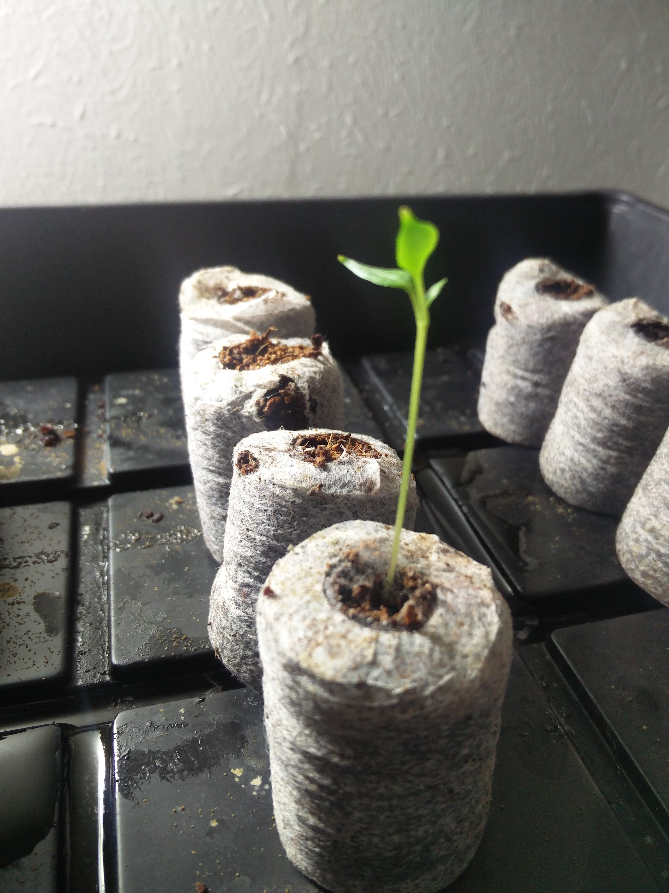

I have been gardening for over 2 years now. The growing season is coming to an end, but I am already starting on a few new plants for next session. The images below are a few pictures of the early sprouts I am preparing for next year. These plants will take several weeks to grow and I am working on having these close to maturity when the growing season starts this spring.
This is a photo of a Farmer's Jalapeno. In courage you to look up this guy and you may be surprised what it looks like.
In this photo we have Husk Cherry tomatoes. Now they are now actually tomatoes and are related to tomatillos. These berries have a husked fruit that has a pinapple taste. Can be difficult to start so I am glad I have three.
For those that are into health trends you may have heard of this plant before. Black Kale is leafy green plant and is a great substitute for spinach or lettuce. Once established this is a hardy plant.
Stay tuned for more updates. I will be posting pictures of my Sun Choke and my Cherokee Black Beans later this week once the weather in my area lightens up.